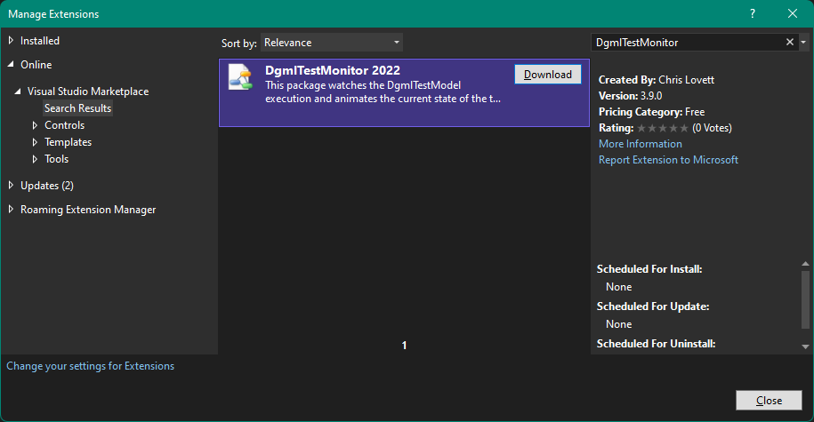
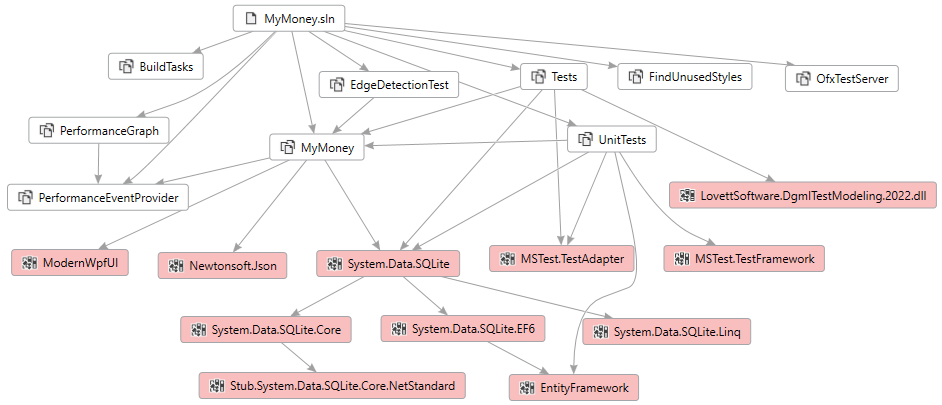

Development#
Software contributions to MyMoney.Net are welcome in the form
of github pull requests. Simply fork the repo, create your own
branch and submit a pull request.
MyMoney is written entirely in C# for .NET Framework 10.0 and is easy for programmers who want access to their data and who want to quickly and easily add their own features. Your data will not be locked up in some proprietary format, it is yours to do with as you like.
Start by cloning the repo (or make your own fork if you plan to do pull requests):
git clone https://github.com/MoneyTools/MyMoney.Net
To build the WPF app load the following solution into Visual Studio 2022. You will need to first install .NET 10.0 SDK.
devenv Source\WPF\MyMoney.sln
Then press F5 to run & debug the program.
Testing#
There are integrated unit tests which you can run in Visual Studio using the Test Explorer.
The integration tests in ScenarioTests.cs are interesting in that they are model based
tests running from a user model called TestModel.dgml.
To run this test you need to first install the
DgmlTestMonitor 2022 plugin:

This installs a new tool window, you can open View/Other Windows/DGML Test Monitor. Here's a demo video showing the testing running.
Projects and Packages#
The overall project dependencies looks like this where the main app MyMoney depends on ModernWPF, Newtonsoft and System.Data.SQLite. Everything else shown here is test related.
